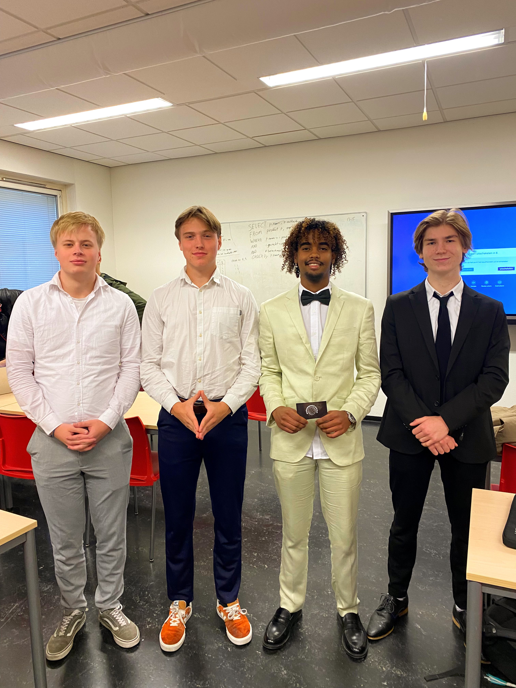

QORE
Kwalitatieve ICT-oplossingen sinds 2023
Over QORE
QORE is een dynamisch moederbedrijf dat in 2023 werd opgericht door vier gemotiveerde studenten en later uitgroeide tot vijf eigenaren. Door de jaren heen heeft QORE aantal bedrijven geholpen met het ontwerpen van op maat gemaakte ICT-oplossingen. Elk subbedrijf van QORE richt zich op het oplossen van een specifiek probleem of het bieden van een innovatieve oplossing.
Klik op de foto's hieronder voor meer informatie over elk project.
Experience Swap
Q-Experience


Q-Vision

Onze Missie
Wij zijn nog lang niet klaar. Onze missie is om bedrijven te helpen met oplossingen die niet alleen effectief zijn, maar ook voldoen aan hoge kwaliteitsstandaarden. Voor ons is kwaliteit geen extra, maar een essentieel onderdeel van elke oplossing.